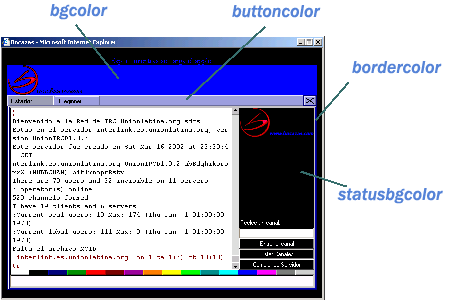

Frequently Asked Questions about Bocazas 1.1
License
You can freely distribute and use this program meanwhile you provide it complete, without modification and free of charge.
You can´t charge any amount for the use of this program or the services provided by it without Bocazas S.L. consent.
Bocazas S.L. cannot be held responsible for the content of the site where is installed, neither for any damage that may occur as a result of using the program.
- Which are the general characteristics and what versions are available?
- Where do I upload the content of the compressed file?
- Which is the simplest way to setup the program?
- I want to enter on channel #test on the server irc.red.com. How can I set it up??
- Which parameters are available for the program?
- How can I change the colors of the program to better suit my web page?
- How can I change the shown text or add my own language?
- How can I show my own logo and banner on the top bar?
- How can I change the quit message?
- Does Bocazas 1.1 support international characters? If that´s the case, How can I setup the program to show them?
- We like your program alot, but it doesn´t completely fit our needs. Is it possible to add new features and modifications to personalize it for our website?
Which are the general characteristics and what versions are available?
Detailed information about the several versions available, may be found at http://www.bocazas.com/en/bocazas.asp
Where do I upload the content of the compressed file?
All the files must be upload to the same folder where your chat web page will be located.
There are two files included as examples:
-
example1.html (Basic html code).
-
example2.html (Example using javascript).
You can use any of the examples provided but any web page that you design and includes the applet will work.
Which is the simplest way to setup the program?
The most simple configuration to make your program work is:
<APPLET archive="bocazas.jar" code="bocazas.class" height="450"
width="620">
<PARAM NAME="cabbase" VALUE="bocazas.cab">
</APPLET>
It will show a 620x450 pixels applet where your nickname and several information will be asked. Remember, if you don´t setup anything else the program will bring you into our irc server (irc.bocazas.com) which can be very helpful if you don´t know or don´t have any irc server.
I want to enter on channel #test on the server irc.red.com. How can I set it up?
Remember: The default IRC server is irc.bocazas.com and you will be able to change it upon registering the product.
The easiest way would be:
<APPLET archive="bocazas.jar" code="bocazas.class" height="450"
width="620">
<PARAM NAME="cabbase" VALUE="bocazas.cab">
<PARAM NAME="channel1" VALUE="#test">
<PARAM NAME="server1" VALUE="irc.red.com">
</APPLET>
Which parameters are available for the program?
The applet accepts several parameters defined on the param tag:
nickname - Specify a default nickname.
fullname - The name to be shown on irc when somebody does a whois.
channel1
channel2
channel3, etc... - Defines all the channels that
you want to show in the list of the configuration menu. By default the first
one will be selected.
server1
server2
server3, etc... - Defines all the servers you want
to show in the list of the configuration menu. By default the first one will be
selected.
You can especify a different port for each server following the format:
irc_server:port1,port2,port3
Ej: <PARAM name="Server1" value="irc.bocazas.com:6667,6668" >
If not irc port is given, 6667 is the default.
language1
language2
language3, etc... - Defines all the languages you want
to show on the list of the configuration menu. This will be used to show all
the program messages on the proper language. By default the first one will be
selected.
Supported values are:
Español
English
If you wish to add or modify a language, please visit this link.
list - Defines if you want to list all the channels upon entering the server. Values: true, false
files - Defines if you want to be able to receive files through dcc. Default value is true. Values: true, false.
popup - Defines if you want the applet to popup from the browser window, allowing in that way to ajust its size. Values: true, false
ident - Defines the ident that will be shown on irc.
autoentry - By default the program will enter into the IRC server automatically if given enough parameters (nickname, channel, server). But you can change this behaviour and show the configuration menu first to the user by giving this param a false value.
smileys - Defines where the smileys (emoticons) file is located.
buttons - Defines where the buttons graphic file is located.
encoding- Defines the character encoding for the connection (sometimes needed for international support). For detailed information please visit this link.
There are several more params to define the look and feel of your program. If you wish to change the colors or front-end please follow this link.
Parameters available on the registered versions:
logo - Defines the location of the logo that will be shown on the top left corner. Recommended dimensions are 150x60 pixels.
logourl - Defines the web page to which the user will be redirected if he/she clicks on the logo.
banner - Defines the location of the banner that will be shown on the top. Recommended dimensions are 468x60 pixels.
bannerurl - Defines the web page to which the user will be redirected if he/she clicks on the banner.
top - It allows to hide the whole banner and logo bar at the top. Use the value false to hide it.
quit - It allows to define which text to be displayed when an user quits the chat.
How can I change the colors of the program to better suit my web page?
If the default colors don´t adapt to your web site, there are several params availabe to modify them. These params are:



Remember to follow the hexadecimal color format used by most design and paint programs. For example, if you wish to change the background color (bgcolor) to blue and the panelcolor to red, the need params would be:
<param name="bgcolor" value="#0000ff">
<param name="panelcolor" value="#ff0000">
How can I change the shown text or add my own language?
As you may know, Bocazas 1.1 comes with two preinstalled languages that can be activated by setting up the params:
<param name="language1" value="Español">
<param name="language2" value="English">
Nevertheless, in the compressed file you will find several language files (espanol.lang, english.lang, turkce.lang, ...) which can be used adding to the value of the param LANGUAGE a ':filename'.
Having said so, you could add the Turkish language found at the file turkce.lang by adding this param:
<param name="language1" value="Turkish:turkce.lang">
You could modify the current default languages too (English or Spanish) by editing the files english.lang or espanol.lang and saving it as a text file using character encoding UTF8. Then just follow the same format:
<param name="language1" value="English:english.lang">
If you wish to add your own language, it´s very simple. Choose a .lang file that you understand and edit it following the format. This means, don´t erase the " don´t change the numbers or special characters because they specify the colors and special format of the text. IMPORTANT remember to save it as a text file using character encoding UTF8.
For example, if you just created the language Pakistani and save it on the file pakis.lang you can add it to Bocazas 1.1 by using this param:
<param name="language1" value="Pakistani:pakis.lang">
How can I show my own logo and banner on the top bar?
You can only do this on the registered version.
Remember that the recommended dimensions for the logo are 150x60 pixels and 468x60 pixels for the banner.
Let´s suppose that we want to show our logo which is located at http://www.myweb.com/logo.gif and that I want to go to http://www.mipropiaweb.com when someone clicks on it. The params would be:
<PARAM NAME="logo" VALUE="http://www.myweb.com/logo.gif">
<PARAM NAME="logourl" VALUE="http://www.mipropiaweb.com">
If we also wish to show our own logo located at http://www.miweb.com/banner.jpg and when someone clicks on it go to http://www.estaweb.com. The needed params would be:
<PARAM NAME="banner" VALUE="http://www.miweb.com/banner.jpg>
<PARAM NAME="bannerurl" VALUE="http://www.estaweb.com">
How can I change the quit message?
You can only do this on the registered version.
You only need to insert the QUIT param as follows:
<PARAM NAME="quit" VALUE= "message to show upon leaving">
Does Bocazas 1.1 support international characters? If that´s the case, How can I setup the program to show them?
This is not an easy task, but Bocazas 1.1 can show any character set that your web browser support. Unfortunately, this doesn´t depend only on our program but the chat server should have international characters support too.
Looking at your chat server documentation, if you know the character encoding used by your server, you just need to add it to the ENCODING param. There is a list of available encoding names at http://java.sun.com/products/jdk/1.1/docs/guide/intl/encoding.doc.html
As an example, if your server uses UTF8 character encoding you will need to add the following:
<PARAM NAME="encoding" VALUE="UTF8">
We like your program alot, but it doesn´t completely fit our needs. Is it possible to add new features and modifications to personalize it for our website?
Bocazas 1.1 adapts to most of the existing websites but some customers will need features that are not available on current versions.
Bocazas S.L. has a wide range of activities and we also develop custom products, therefore if you need to modify, add new features or use our expertize on software development; you might like to contact us directly by email at info@bocazas.com
Copyright ©2002 Bocazas S.L.
info@bocazas.com